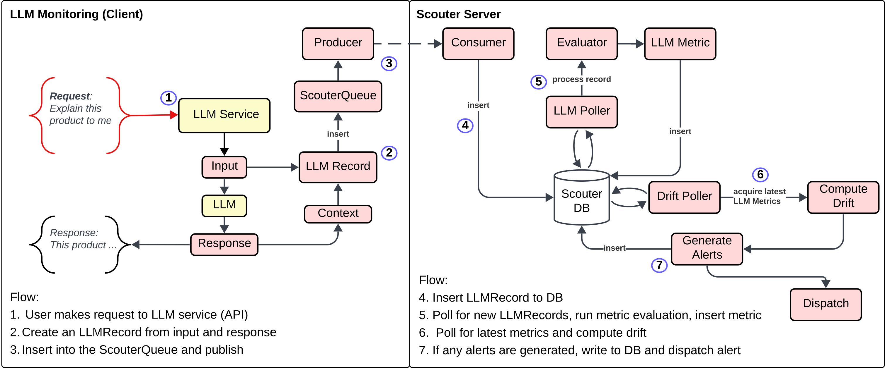

Creating LLM Drift Profiles¶
LLM Drift Profiles in Scouter provide a robust and flexible way to monitor the performance and stability of Large Language Models (LLMs) over time. By defining custom metrics, prompts, and workflows, you can detect drift and set up alerting tailored to your use case.
What is an LLM Drift Profile?¶
An LLM Drift Profile encapsulates:
- The configuration for drift monitoring (LLMDriftConfig)
- The metrics to evaluate (LLMDriftMetric)
- Optionally, a custom workflow (Workflow) for advanced scenarios
This profile can be used to monitor LLMs for changes in output quality, relevance, or any other custom metric you define.
Steps to Create an LLM Drift Profile¶
1. Define LLM Metrics¶
The LLMDriftMetric class represents a single metric for LLM drift detection.
Arguments:
| Argument | Type | Required | Description |
|---|---|---|---|
name |
str |
Yes | Name of the metric (e.g., "accuracy", "relevance") |
value |
float |
Yes | Baseline value for the metric |
alert_threshold |
AlertThreshold |
Yes | Condition for triggering an alert (e.g., Above, Below) |
alert_threshold_value |
float, optional |
No | Threshold value for alerting |
prompt |
Prompt, optional |
No | Prompt associated with the metric (required if not using workflow) |
Example:
from scouter.llm import AlertThreshold, Prompt, Score
from scouter.drift import LLMDriftMetric
reformulation_prompt = (
"You are an expert evaluator of search query reformulations. "
"Given the original user query and its reformulated version, your task is to assess how well the reformulation improves the query. "
"Consider the following criteria:\n"
"- Does the reformulation make the query more explicit and comprehensive?\n"
"- Are relevant synonyms, related concepts, or specific features added?\n"
"- Is the original intent preserved without changing the meaning?\n"
"- Is the reformulation clear and unambiguous?\n\n"
"Provide your evaluation as a JSON object with the following attributes:\n"
"- score: An integer from 1 (poor) to 5 (excellent) indicating the overall quality of the reformulation.\n"
"- reason: A brief explanation for your score.\n\n"
"Format your response as:\n"
"{\n"
' "score": <integer 1-5>,\n'
' "reason": "<your explanation>"\n'
"}\n\n"
"Original Query:\n"
"${user_query}\n\n"
"Reformulated Query:\n"
"${response}\n\n"
"Evaluation:"
)
metric = LLMDriftMetric(
name="reformulation",
value=5.0,
alert_threshold=AlertThreshold.Below,
alert_threshold_value=2.0, # Alert if score is below 3 or less (5.0 - 2.0)
prompt=Prompt(
message=reformulation_prompt,
model="gpt-4o",
provider="openai",
response_format=Score
)
)
Prompt Requirements¶
When defining prompts for LLM metrics, ensure they include the following:
-
Input Parameters:
- Each prompt must include at least one named parameter. An error will be raised if the prompt does not include a parameter
(e.g.,
${input},${response},${user_query}). This is what you will insert into theScouterQueueat runtime as context and will be bound to your prompt. - Named parameters must follow the
${parameter_name}format.
- Each prompt must include at least one named parameter. An error will be raised if the prompt does not include a parameter
(e.g.,
-
Score Response Format: All evaluation prompts must use the
Scoreresponse format. The prompt should instruct the model to return a JSON object matching theScoreschema:score: An integer value (typically 1–5) representing the evaluation result.reason: A brief explanation for the score.
2. Create an LLM Drift Config¶
The LLMDriftConfig class defines the configuration for drift monitoring.
Arguments:
| Argument | Type | Required | Description |
|---|---|---|---|
space |
str |
No | Model space (default: "__missing__") |
name |
str |
No | Model name (default: "__missing__") |
version |
str |
No | Model version (default: "0.1.0") |
sample_rate |
int |
No | Sample rate for drift detection (default: 5 (1 out of 5)) |
alert_config |
LLMAlertConfig |
No | Alert configuration |
Example:
from scouter.llm import LLMDriftConfig
config = LLMDriftConfig(
space="my_space",
name="my_model",
version="1.0.0",
sample_rate=10 #(1)
)
- The
sample_ratedetermines how often drift events are recorded. A value of 10 means 1 out of every 10 requests will be recorded for drift monitoring.
3. (Optional) Define a Custom Workflow¶
For advanced scenarios, you can provide a custom Workflow to evaluate complex pipelines or multi-step tasks.
- All metric names must match the final task names in the workflow.
- Final tasks must use the
Scoreresponse type. - You will still need to define metrics, but you will not need to provide prompts for each metric if you use a workflow, as it is expected the workflow will contains the necessary prompts.
Example:
from scouter.llm import Workflow, Task, Score, Agent, Prompt
from scouter.drift import LLMDriftConfig, LLMDriftMetric
# Relevance prompt
relevance_prompt = Prompt(
message=(
"Given the following input and response, rate the relevance of the response to the input on a scale of 1 to 5.\n\n"
"Input: ${input}\n" # (1)
"Response: ${response}\n\n"
"Provide a brief reason for your rating."
),
system_instruction="You are a helpful assistant that evaluates relevance.",
response_format=Score
)
# Coherence prompt
coherence_prompt = Prompt(
message=(
"Given the following response, rate its coherence and logical consistency on a scale of 1 to 5.\n\n"
"Response: ${response}\n\n"
"Provide a brief reason for your rating."
),
system_instruction="You are a helpful assistant that evaluates coherence.",
response_format=Score
)
final_eval_prompt = Prompt(
message=(
"Given the previous relevance and coherence scores for a model response, "
"determine if the response should PASS or FAIL quality control.\n\n"
"If both scores are 4 or higher, return a score of 1 and reason 'Pass'. "
"If either score is below 4, return a score of 0 and reason 'Fail'.\n\n"
"Respond with a JSON object matching the Score schema."
),
system_instruction="You are a strict evaluator that only passes high-quality responses.",
response_format=Score
)
open_agent = Agent("openai")
workflow = Workflow(name="test_workflow")
workflow.add_agent(open_agent)
workflow.add_tasks( # (2)
[
Task(
prompt=relevance_prompt,
agent_id=open_agent.id,
id="relevance",
),
Task(
prompt=coherence_prompt,
agent_id=open_agent.id,
id="coherence",
),
Task(
prompt=final_eval_prompt,
agent_id=open_agent.id,
id="final_evaluation",
depends_on=["relevance", "coherence"],
),
]
)
metric = LLMDriftMetric( # (3)
name="final_evaluation",
value=1,
alert_threshold=AlertThreshold.Below,
)
profile = LLMDriftProfile(
config=LLMDriftConfig(),
workflow=workflow,
metrics=[metric],
)
- The
${input}and${response}variables will be fed in by Scouter when you record a drift event. Evaluation prompts must include at least one named parameter.${input}and${response}. It could easily be${user_query}or similar, depending on your use case. The important part is that the first tasks in the workflow must include these parameters, so they can be evaluated against the model's output. - Here we are creating a directed graph of tasks. The
relevanceandcoherencetasks are the first tasks, and thefinal_evaluationtask depends on them. The final task must return aScoretype, which is used to extract the metric value on the Scouter server. - The metric name must match the final task name in the workflow. The
valueis the baseline score for this metric, and thealert_thresholddefines when an alert should be triggered based on the metric's value.
4. Create the LLM Drift Profile¶
Use the LLMDriftProfile class to create a drift profile by combining your config, metrics, and (optionally) workflow.
Arguments:
| Argument | Type | Required | Description |
|---|---|---|---|
config |
LLMDriftConfig |
Yes | Drift configuration |
metrics |
List[LLMDriftMetric] |
Yes | List of metrics to monitor |
workflow |
Workflow, optional |
No | Custom workflow for advanced evaluation (optional) |
Example (metrics only):
from scouter.llm import LLMDriftProfile
profile = LLMDriftProfile(
config=config,
metrics=[metric]
)
Prompt Requirements (noted above)¶
When creating prompts for LLM Drift Profiles and workflows, the following requirements must be met:
- Input Parameters:
-Each evaluation prompt must include at least one named parameter that will be injected at runtime.
-
Score Response Format:
All evaluation prompts must use theScoreresponse format. The prompt should instruct the model to return a JSON object matching theScoreschema:score: An integer value (typically 1–5) representing the evaluation result.reason: A brief explanation for the score.
-
Workflow Tasks:
- The first tasks in a workflow must use prompts that include a named parameter.
- The final tasks in a workflow must return a
Scoreobject as their response.
Example Score JSON:
Inserting LLM Drift Data¶
For a general detailed guide on the ScouterQueue, and how to insert data for real-time monitoring in your service, please refer to the Inference documentation. While the general insertion logic is similar for all drift types, there are a few specific considerations for LLM drift profiles.
LLM Drift Data Insertion¶
To insert data for LLM drift profiles, you first create an LLMRecord, which takes the following parameters:
| Argument | Type | Required | Description |
|---|---|---|---|
context |
dict or pydantic BaseModel |
Yes | Context to provide to your metrics During evaluation, this will be injected into your metric workflow and bound to the named parameters within your prompts. So if you're evaluation prompts expect ${user_query}, you would pass {"user_query": "my user query"} as context. |
prompt |
Prompt orstr |
No | Optional prompt configuration associated with this record. Can be a Potatohead Prompt or a JSON-serializable type. We don't current use this field for drift detection, but we may add analysis capabilities in the future. |
Example:
from scouter.queue import LLMRecord
record = LLMRecord(
context={"input": "How do I find live music in my area?"}
)
# insert into the ScouterQueue
queue["my_llm_service"].insert(record)
How are the metrics calculated?¶
Scouter is designed to evaluate LLM metrics asynchronously on the server, ensuring your application's performance is not impacted. Here’s how the process works:
-
Record Ingestion:
When you insert anLLMRecord, it is sent to the Scouter server. -
Profile Retrieval:
Upon receiving the record, the server retrieves the associated drift profile, which specifies the metrics and workflow to execute. -
Prompt Injection & Workflow Execution:
The server injects thecontextfrom theLLMRecordinto the prompts defined in the workflow. It then runs the workflow according to your configuration. -
Metric Extraction:
After executing the workflow, the server extracts theScoreobject from the relevant tasks as defined by yourLLMDriftMetrics. -
Result Storage & Alerting:
The results are stored in the llm metric table. The system then periodically polls these results based on your alerting schedule. If a score falls below the defined threshold, Scouter triggers an alert and sends it to your configured alerting channel.
This asynchronous evaluation ensures that metric calculation is robust and does not interfere with your service’s real-time performance.
Architecture Overview¶

What Scouter Doesn't Do for LLMs¶
Scouter is meant to be a generic monitoring system for LLM services, meaning we provide you with the basic building blocks to define how you want to monitor your services, so that you can integrate it with any framework. In addition, Scouter is not an observability platform, so it does not provide things like LLM tracing. In our experience, tracing != monitoring, and is primarily used for debugging purposes. If you want to trace your LLM services (or any general service), we recommend using a tool like OpenTelemetry or similar.
Examples¶
Check out the examples directory for more detailed examples of creating and using LLM Drift Profiles in Scouter.